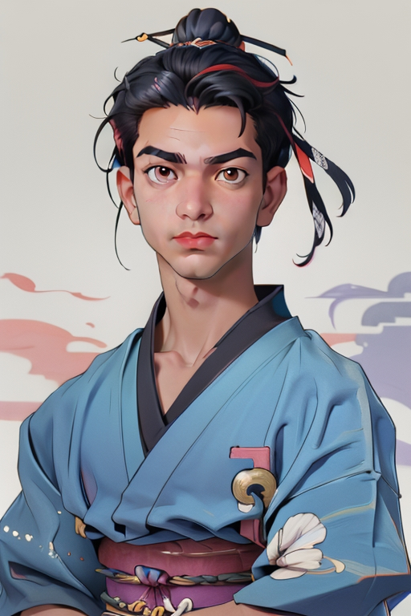

"‘n Realistiese ridder, gebruik maksimum Skaal"
Resultaat 1:
"Gebruik die chibi styl en maak 'n samurai, gebruik standaardwaardes"
Resultaat 2:
"‘n Samurai, gebruik 31 denoising stappe, en anime styl"
Resultaat 3:

Die Gesig Generasie kenmerk in AiCasso is ongelooflik veelsydig! Dit laat jou toe om pragtige beelde te skep deur 'n spesifieke gesig in verskillende karakters of style in te sluit. Of jy nou 'n ridder, samurai of enige ander karakter voorstel, AiCasso gebruik die ingevoerde gesig om 'n beeld te genereer met daardie gesig geïntegreer in die versoekte ontwerp.
"‘n Realistiese ridder, gebruik maksimum Skaal"
Resultaat 1:
"Gebruik die chibi styl en maak 'n samurai, gebruik standaardwaardes"
Resultaat 2:
"‘n Samurai, gebruik 31 denoising stappe, en anime styl"
Resultaat 3:As jy 'n bietjie meer persoonlikheid of beheer aan jou gegenereerde beelde wil toevoeg, hier is 'n paar opsies wat jy kan aanpas:
En onthou, AiCasso is redelik vergifnisvol. Jy hoef nie 'n grammatika-tovenaar te wees of elke detail perfek te kry nie. Beskryf net wat jy wil in jou eie woorde, en AiCasso sal die res hanteer. Geniet die skep!